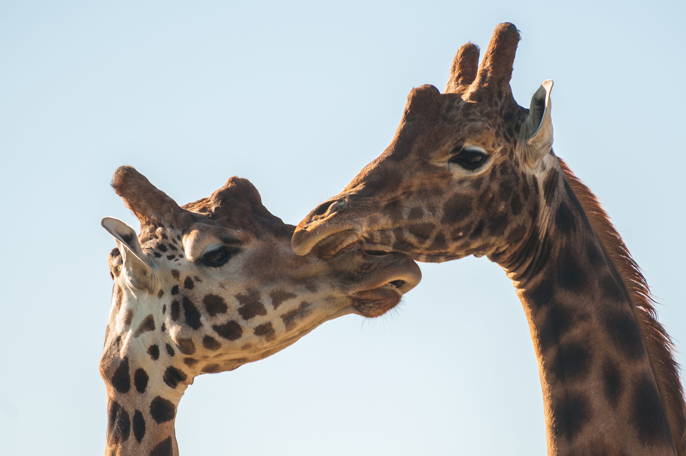

Mountian gorillas are considered endangered by ICUN's red list. Not only are mountain gorillas threatened by loss of habitat due to human encroachment, they have also become victims of human violence. As Civil war rages in Africa, efforts to conserve mountain gorilla popultions have been set of. Here we have Steven the mountain gorilla who was taken into our care 5 years ago as just an infant he has a few words to say about why you should adopt him. "Steven here ive just had my tea if i could describe myself in 3 words I would say whitty, funny and charasmatic. Because I have been here since am infant i am the most friendly with the humans out of all of the gorillas here. I love playing with my brother kevin although we get a bit crazy sometimes and throw our food at each other. I cant be let out in the wild you see because I have been here almost all my life I was never taught and skils but if you could donate anything at all to help feed me evem if its as little as a bamboo shoot for me to eat, every little helps. Thankyou all
A centry ago 50,000 to 80,000 tigers roamed free in india alone. Today the tiger is classified Endangered by the ICUN and it is estimated there are only 3,500 tigers remaining in the wild worldwide. Here we have Linda a monther of three cubs who we rescued from a curel circus in Austria she has a few word on why you should adopt her and her three cubs."Hello everyone my name is linda and my three cubs names are ronnie and Sarah however I havent thought of a name for the youngest yet, adopt me and you get to name one of my cubs and recieve an adoption pack with a cuddly toy including information about how your donation has helped. By adopting us you could help me and my cubs to be realised back into the wild where we belong. You could also help us recive the best care and food. hope you have a Roarsome day"

Giraffe numbers have plummited by 40% in the last three decades and less than 100,000 remain today due to habitat loss and being poached. Cheryl the giraffe who is at the grand olf age of 20 was brought into our care 5 years ago when she was taken by poachers to be sold to the highest bidder however our team intercepted this auction and bought all the animals with your donations so that they can be safe. Cheryl has a few words to say about why you should adopt her "hey there guys my names cheryl the giraffe im getting quite old now and the team here are just making life as comfortable as they can for me in my last few years your donations have helped so much while i've been here. I contracted GSD which is a skin disease which affected my limbs and I couldnt walk for a while. By using a very expensive cream the team managed to ease the pain for me and I now walk with confidence. Please donate anything you can to help other animals like me. with love from Cheryl."